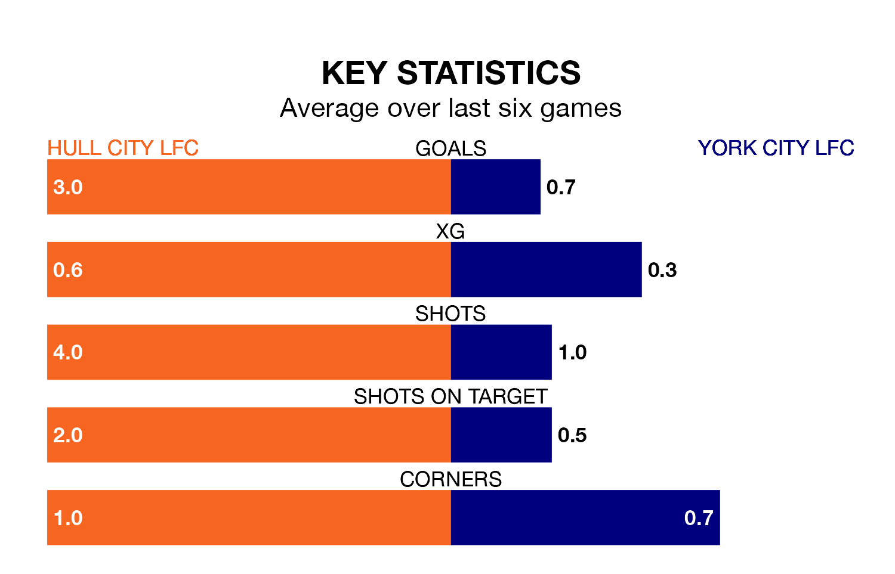

Relegation candidates York City LFC face a challenge away against high-flying Hull City LFC on Sunday.
York City LFC are 11th in the Women's National League Division One – North table, and have picked up two wins and four draws in their 16 games to date.
Hull City, meanwhile, are third in the standings with 37 points, having won 12 and drawn one of their first 15 matches, and are five points behind table-toppers Middlesbrough Women.
With 45 goals in 15 games so far this season, Hull City are the league's highest scorers with 3.0 goals per game. And they are conceding fewer than average, letting in 17 goals at a rate of 1.1 per game.
York City, meanwhile, are below average scorers, with 1.3 goals per game, compared to a league average of 1.6. They have conceded 1.6 goals per game.
The hosts are in fantastic form in the Women's National League Division One North, with five wins and one loss from their last six games.
With no wins and two draws over that period, the away team's form is much worse – they have taken two points from 18, compared to Hull City's 15.
In the last three years, Hull City and York City have played each other on three occasions. Hull City won all of them.
Their last meeting was on August 20, when Hull City won 4-3 away.
Hull City's last match was on March 24, a 2-1 win against Durham Cestria WFC.
York City drew 0-0 with Barnsley Women last time out, on April 7.
Updated: 15:40 (UTC), 18/04/24